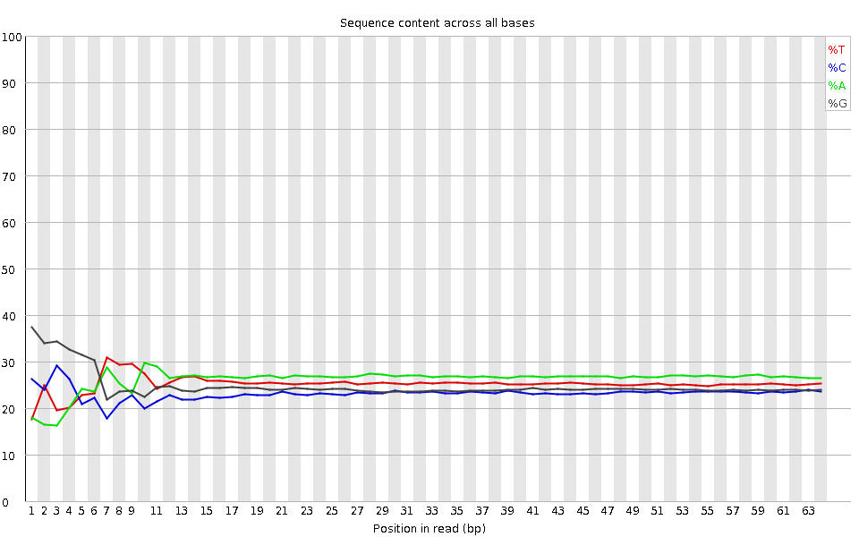
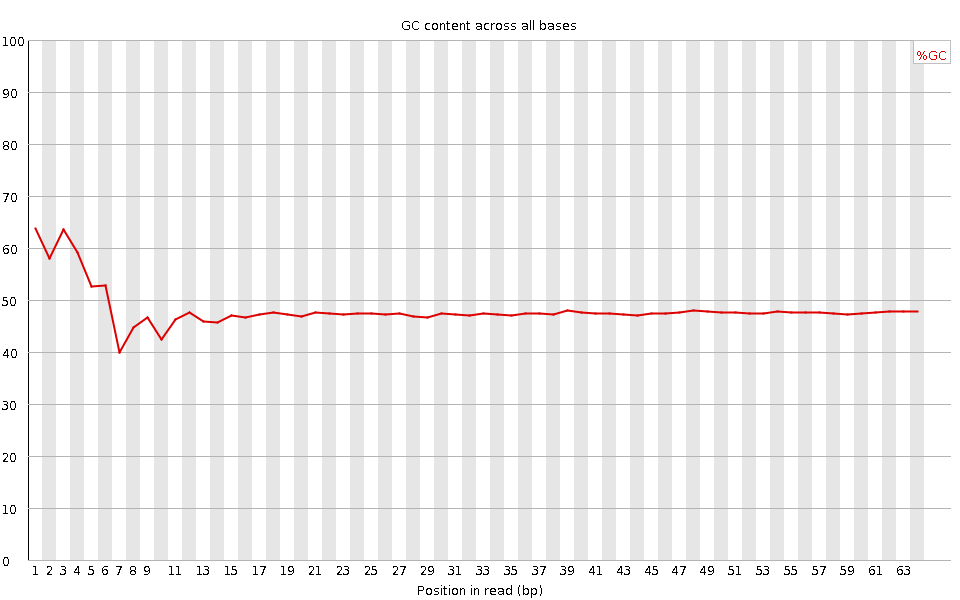
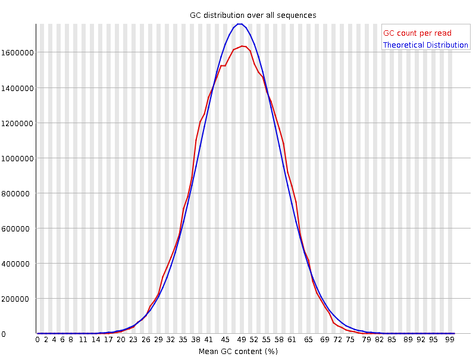
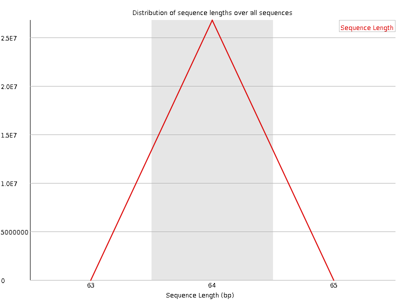
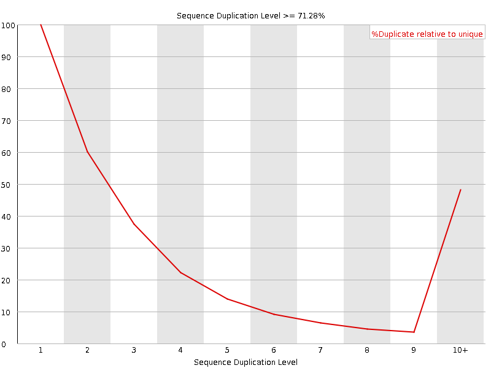
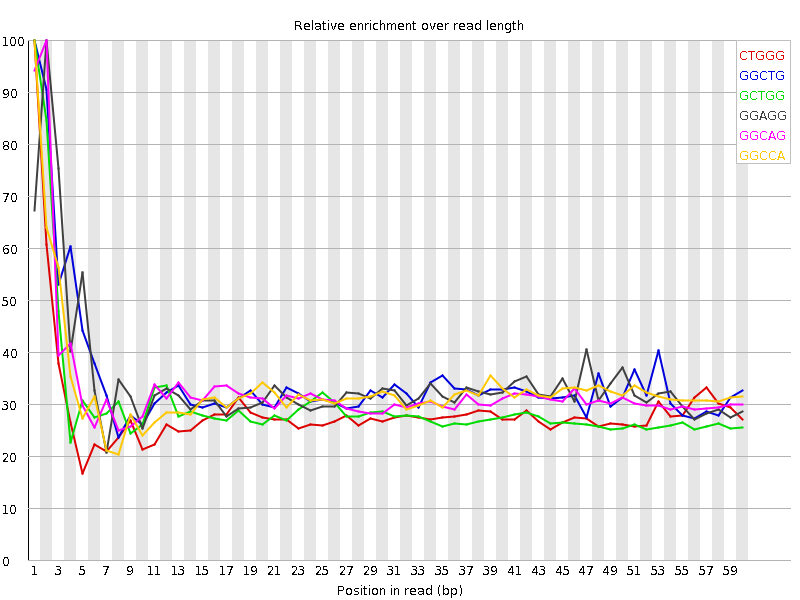

![[OK]](Icons/tick.png) Basic Statistics
Basic Statistics
| Measure | Value |
|---|---|
| Filename | SRR315320_pe_1.f.fastq |
| File type | Conventional base calls |
| Encoding | Sanger / Illumina 1.9 |
| Total Sequences | 26768811 |
| Filtered Sequences | 0 |
| Sequence length | 64 |
| %GC | 48 |
Per base sequence quality

Per sequence quality scores

![[WARN]](Icons/warning.png) Per base sequence content
Per base sequence content

![[FAIL]](Icons/error.png) Per base GC content
Per base GC content

Per sequence GC content

Per base N content

Sequence Length Distribution

Sequence Duplication Levels

Overrepresented sequences
No overrepresented sequences
Kmer Content

| Sequence | Count | Obs/Exp Overall | Obs/Exp Max | Max Obs/Exp Position |
|---|---|---|---|---|
| CTGGG | 2978255 | 2.0154638 | 6.9828024 | 1 |
| GGCTG | 2912225 | 1.9707798 | 5.6867356 | 1 |
| GCTGG | 2751170 | 1.8617896 | 6.20971 | 1 |
| GGAGG | 3030860 | 1.8440943 | 5.363697 | 2 |
| GGCAG | 2752815 | 1.792592 | 5.432837 | 2 |
| GGCCA | 2431585 | 1.6946541 | 5.134382 | 1 |
| GGGCA | 2506195 | 1.6319968 | 5.729973 | 1 |
| GGGAG | 2664275 | 1.6210495 | 6.0188036 | 2 |
| TGGGG | 2316830 | 1.4649411 | 6.29092 | 1 |
| GTGGG | 2274715 | 1.4383116 | 8.093935 | 1 |
| GGGTG | 2211225 | 1.3981668 | 5.586597 | 2 |
| GGGGA | 2280485 | 1.3875366 | 7.182991 | 1 |
| GGGGT | 2126060 | 1.3443166 | 7.173364 | 3 |
| GGGGG | 2067570 | 1.3281208 | 8.775515 | 1 |
| GGGGC | 1553595 | 1.0680765 | 5.04808 | 2 |
| CGGGG | 1113545 | 0.7655478 | 6.5980196 | 1 |